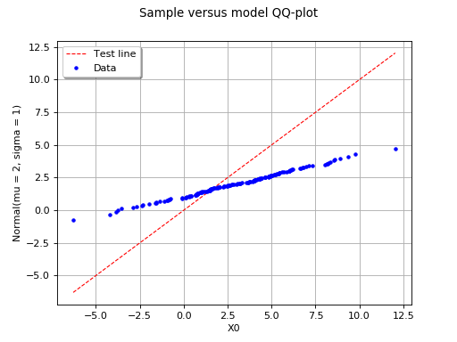
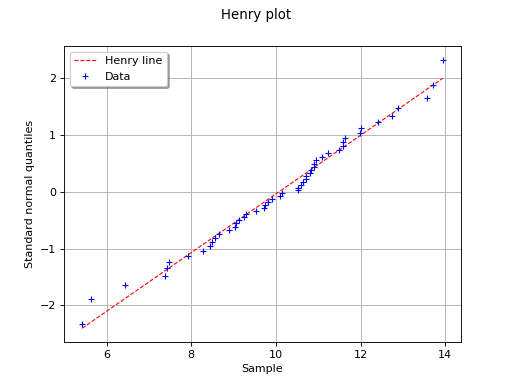
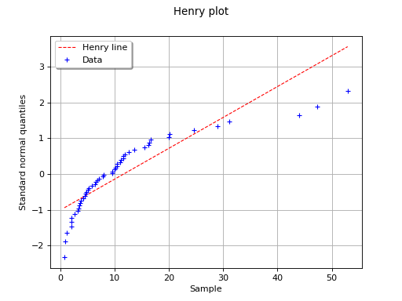
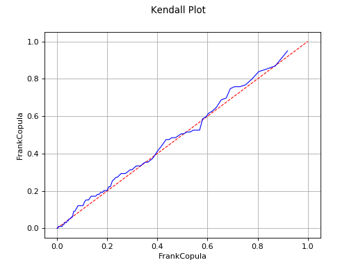
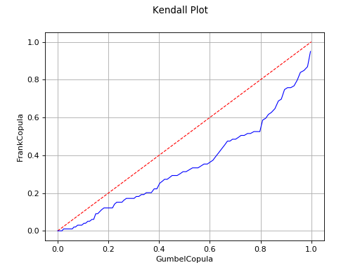

Graphical goodness-of-fit tests¶
This method deals with the modelling of a probability distribution of a
random vector  . It
seeks to verify the compatibility between a sample of data
. It
seeks to verify the compatibility between a sample of data
 and a
candidate probability distribution previous chosen.
The use of graphical tools allows to answer this question in the one
dimensional case
and a
candidate probability distribution previous chosen.
The use of graphical tools allows to answer this question in the one
dimensional case  , and with a continuous distribution.
The QQ-plot, and henry line tests are defined in the case to
, and with a continuous distribution.
The QQ-plot, and henry line tests are defined in the case to
 . Thus we denote
. Thus we denote  . The first
graphical tool provided is a QQ-plot (where “QQ” stands
for “quantile-quantile”). In the specific case of a Normal distribution,
Henry’s line may also be used.
. The first
graphical tool provided is a QQ-plot (where “QQ” stands
for “quantile-quantile”). In the specific case of a Normal distribution,
Henry’s line may also be used.
QQ-plot
A QQ-Plot is based on the notion of quantile. The
 -quantile of
-quantile of  , where
, where
 , is defined as follows:
, is defined as follows:

If a sample of is
available, the quantile can be estimated empirically:
the sample is first placed in ascending order, which gives the sample
 ;
;then, an estimate of the
-quantile is:![\begin{aligned}
\widehat{q}_{X}(\alpha) = x_{([N\alpha]+1)}
\end{aligned}](../../_images/math/56109ae317e0d87031f766583431dec7a384948f.svg)
where ![[N\alpha]](../../_images/math/8d60d0527f3824c774305d2c866e11002ee02961.svg) denotes the integral part of
.
denotes the integral part of
.
Thus, the  smallest value of the sample
is an estimate of the
-quantile where
smallest value of the sample
is an estimate of the
-quantile where  ().
().
Let us then consider the candidate probability distribution being
tested, and let us denote by  its cumulative distribution
function. An estimate of the -quantile can be also
computed from :
its cumulative distribution
function. An estimate of the -quantile can be also
computed from :

If is really the cumulative distribution function of
, then and
 should be close. Thus, graphically, the
points
should be close to the diagonal.
should be close. Thus, graphically, the
points
should be close to the diagonal.
The following figure illustrates the principle of a QQ-plot with a
sample of size  . Note that the unit of the two axis is that
of the variable studied; the quantiles determined via
are called here “value of ”. In this example, the
points remain close to the diagonal and the hypothesis “ is the
cumulative distribution function of ” does not seem irrelevant,
even if a more quantitative analysis (see for instance ) should be
carried out to confirm this.
. Note that the unit of the two axis is that
of the variable studied; the quantiles determined via
are called here “value of ”. In this example, the
points remain close to the diagonal and the hypothesis “ is the
cumulative distribution function of ” does not seem irrelevant,
even if a more quantitative analysis (see for instance ) should be
carried out to confirm this.
(Source code, png, hires.png, pdf)
{kind=link}
{kind=link}

In this second example, the candidate distribution function is clearly irrelevant.
(Source code, png, hires.png, pdf)
{kind=link}
{kind=link}

Henry’s line
This second graphical tool is only relevant if the candidate
distribution function being tested is gaussian. It also uses the ordered
sample introduced for
the QQ-plot, and the empirical cumulative distribution function
presented in .
By definition,
Then, let us denote by the cumulative distribution function of a Normal distribution with mean 0 and standard deviation 1. The quantity is defined as follows:

If is distributed according to a normal probability
distribution with mean  and standard-deviation
and standard-deviation
 , then the points
, then the points
 should be close to the line defined by .
This comes from a property of a normal distribution: it the distribution
of is really , then the distribution of
should be close to the line defined by .
This comes from a property of a normal distribution: it the distribution
of is really , then the distribution of
 is
is  .
.
The following figure illustrates the principle of Henry’s graphical test
with a sample of size . Note that only the unit of the
horizontal axis is that of the variable studied. In this
example, the points remain close to a line and the hypothesis “the
distribution function of is a Gaussian one” does not seem
irrelevant, even if a more quantitative analysis (see for instance )
should be carried out to confirm this.
(Source code, png, hires.png, pdf)
{kind=link}
{kind=link}

In this example the test validates the hypothesis of a gaussian distribution.
(Source code, png, hires.png, pdf)
{kind=link}
{kind=link}

In this second example, the hypothesis of a gaussian distribution seems
far less relevant because of the behaviour for small values of
.
Kendall plot
In the bivariate case, the Kendall Plot test enables to validate the choice of a specific copula model or to verify that two samples share the same copula model.
Let  be a bivariate random vector which copula is
noted
be a bivariate random vector which copula is
noted  .
Let
.
Let  be a sample of
.
be a sample of
.
We note:
and the ordered statistics of
 .
.
The statistic  is defined by:
is defined by:
(1)¶
where is the cumulative density function of
 . We can show that this is the cumulative density function
of the random variate when and are
independent and follow
. We can show that this is the cumulative density function
of the random variate when and are
independent and follow  distributions.
distributions.
 samples of size
samples of size
 from the bivariate copula , in order to have
realisations of the statistics
from the bivariate copula , in order to have
realisations of the statistics
 and have an estimation of
.
and have an estimation of
. respectively
associated to the first and second sample. Note that the two samples
must have the same size.
respectively
associated to the first and second sample. Note that the two samples
must have the same size.(Source code, png, hires.png, pdf)
{kind=link}
{kind=link}

The Kendall Plot test validates the use of the Frank copula for a sample.
(Source code, png, hires.png, pdf)
{kind=link}
{kind=link}

The Kendall Plot test invalidates the use of the Frank copula for a sample.
Remark: In the case where you want to test a sample with respect to a specific copula, if the size of the sample is superior to 500, we recommend to use the second form of the Kendall plot test: generate a sample of the proper size from your copula and then test both samples. This way of doing is more efficient.
API:
See
VisualTest_DrawQQplot()to draw a QQ plotSee
VisualTest_DrawHenryLine()to draw the Henry lineSee
VisualTest_DrawKendallPlot()to draw the Kendall plot
Examples:
References: